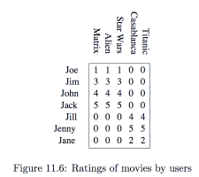
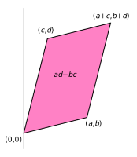
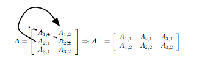

DSTA
Activity tables show how users map their choices or, viceversa, how available products map onto their adopters.

Running example from Ch. 11, p. 430 of MMDS.
\[ A_{7\times 5} = \begin{pmatrix} 1 & 1 & 1 & 0 & 0\\ 3 & 3 & 3 & 0 & 0\\ 4 & 4 & 4 & 0 & 0\\ 5 & 5 & 5 & 0 & 0\\ 0 & 0 & 0 & 4 & 4\\ 0 & 0 & 0 & 5 & 5\\ 0 & 0 & 0 & 2 & 2 \end{pmatrix} \]
\[ A_{7\times 5} = \begin{pmatrix} 1 & 1 & 1 & \dots \\ 3 & 3 & 3 & \dots\\ 4 & 4 & 4 & \dots\\ \vdots & \vdots & \vdots & \ddots \end{pmatrix} \]
the matrix ‘forgets’ the labels for rows/cols., eg, Joe/1st row, The Matrix/1st col. etc.
\[ B_{18\times 13} = \begin{array}{|ccccccc|ccccc|c} 1 & 0 & 0 & {\ddots} &&& && 1 & 0 & {\ddots} && 1\\ 1 & 0 & 0 & {\ddots} &&& && 0 & 1 & {\ddots} && 1\\ 1 & 0 & 0 & {\ddots} &&& &&& {\ddots} &&& {\vdots}\\ &&& {\ddots} &&& &&& {\ddots} &&& {\vdots} \end{array} \]
\[ B_{18\times 13} = \begin{array}{|cccc|ccc|c} 1 & 0 & 0 & {\ddots} & 1 & 0 & {\ddots} & 1\\ 1 & 0 & 0 & {\ddots} & 0 & 1 & {\ddots} & 1 \end{array} \]
1st col. indicates that Joe watched the film
8th col indicates that The Matrix was the film watched
the final col. is views (or ratings) from the original table: 18 reviews overall.
\[ B_{18\times 13} = \begin{array}{|ccccccc|ccccc|c} 1 & 0 & 0 & {\ddots} &&& && 1 & 0 & {\ddots} && 1\\ 1 & 0 & 0 & {\ddots} &&& && 0 & 1 & {\ddots} && 1\\ 1 & 0 & 0 & {\ddots} &&& &&& {\ddots} &&& {\vdots}\\ &&& {\ddots} &&& &&& {\ddots} &&& {\vdots} \end{array} \]
\(U \cdot F \cdot \mathbf{r}\) ( where \(\cdot\) means concatenation)
Q: if a user declares appreciation of Science fiction, how could it be imputed to the films they’ve reviewed?
A system of linear equations:
\[a_{i_1} x_1 + a_{i_2} x_2 + \dots a_{i_n} x_n = b_i\]
\[A \mathbf{x} = \mathbf{b}\]
use r instead of b as those are ratings:
\[A \mathbf{x} = \mathbf{r}\]
Interpretation: how each film contributed to determine this user’s appreciation for the Sci-Fi genre
represents a linear transformation, a particular type of mapping, between two (linear) spaces;
is just one of the possible representations of a mapping -it depends on a choice for the bases for source and target spaces.
apply the full machinery of LA/Geometry and see what happens.
apply the full machinery of LA/Geometry and see what happens.
We apply linear maps (in particular, eigenvalues and eigenvectors) to matrices that do not represent geometric transformations, but rather some kind of relationship between entities (e.g., users and films).
A user experience is represented by a vector: user’s ratings for each film. E.g.,
joe = <1, 1, 1, 0, 0>
jill = <0, 0, 0, 4, 4>
These are row vectors while normally vectors are columns. The transpose T operator inverts row and columns: \(\mathbf{joe}^T\) is a column vector.
\[ \mathbf{joe}^T = \begin{pmatrix} 1 \\ 1 \\ 1 \\ 0 \\ 0 \end{pmatrix} \]
\[ A = \begin{pmatrix} 1 & 2\\ 3 & 4 \end{pmatrix} \]
\[ A^T = \begin{pmatrix} 1 & 3\\ 2 & 4 \end{pmatrix} \]
Q: Can the given users’ experiences be combined to yield a specific point r that represents a rating of how much each user likes Sci-Fi?
r = \(<6, 9, 10, .5, 1>^T\)
Geometry sees vectors (user experiences) as axes of a reference system that spans a space of possible ratings.
That is possible only if at least n vectors are independent from each other.
That is automatically the case for the axes of a Cartesian diagram, or for any set of orthogonal vectors.
Two vectors are dependent when one is simply a multiple of the other: their direction is the same but for stretching or compression.
Dependent v. should be detected and, if possible, excluded.
Non-independence example: I only watch Jason Bourne films at my friend’s
U = {Alb, Ale}, F = {The-B-id, The-B-ultimatum, …}
\[ A_{Bourne} = \begin{pmatrix} 4 & 4 & 4 & 0 & 2\\ 2 & 2 & 2 & 0 & 1 \end{pmatrix} \]
The two rows are dependent! Ale depends on Alb for watching Jason Bourne films.
Test: can you find two numbers \(x_1\) and \(x_2\) s.t.
\(x_1\cdot \mathbf{alb}^T + x_2\cdot \mathbf{ale}^T = \mathbf{0}\)?
(here \(\cdot\) means multiplication)
Simplest solution: \(x_1=1\) and \(x_2=-2\).
The determinant understand the matrix as an area
\[ \begin{vmatrix} a & b \\ c & d \end{vmatrix} = ad - bc \]

the new space created by taking (a,b) and (c,d) as axes
if the determinant of \(A\) is zero, \(|A|=0\), then
column vectors are not independent;
A does not have a unique inverse matrix, so
it is not amenable to further processing.
The Rank of a matrix A is the dimension of the vector space
generated by its columns.
It corresponds to
the maximum number of linearly-independent columns
the dimension of the space spanned by the rows
We consider data matrices with independent columns, ie., \(rank(A_{m\times n}) = n.\)
The identity matrix \(I\) (or \(U\)) is the unit m.: \(I\cdot I = I\)
\[ I = \begin{pmatrix} 1 & 0 & \dots \\ 0 & 1 & \\ \vdots & & \ddots & \end{pmatrix} \]
Given A, find its inverse \(A^{-1}\) s.t.
\(A^{-1} \cdot A = I\)
\[ A = \begin{pmatrix} 1 & 2\\ 3 & 4 \end{pmatrix} \]
\[ A^{-1} = \begin{pmatrix} -2 & 1\\ 1.5 & -0.5 \end{pmatrix} \]
A is non-singular and square: the inverse is both left and right: \(A^{-1} \cdot A = A \cdot A^{-1} = I\)
In Data Science, matrices are normally rectangular and inversion is a sensitive topic:
the inverse may not exist, or be non-unique;
numerical issues: \(A^{-1}\cdot A\approx I\).
Inversion is only defined for square matrices:
if \(A\) is rectangular then square it: \(A^\prime = A^T\cdot A\)

Numpy extends Python to numerical computation.
To handle large data it creates view rather copies of arrays/matrices.
Alternative transposition:
@ generalises to tensors: three-dimensional
matrices.
m = np.array([[4, 4, 4, 0, 2], [2, 2, 2, 0, 1]])
mt = m.transpose()
mprime = m.dot(mt)
print(mprime.shape)Here (the Jason Bourne ex.) rows are not independent. This is revealed by \(|M^\prime |=0\)
Matrix inversion and checking for errors in the results
i = np.eye(2)
if (np.linalg.det(mprime)):
mprime_inv = np.linalg.inv(mprime)
mprime_dot_mprime_inv = mprime.dot(mprime_inv)
# handles inf and tiny vals
print(np.allclose(mprime_dot_mprime_inv, i)) prints true if mprime_dot_mprime_inv is
element-wise equal to i within a tolerance.